DOLYNA

AI не забрав твою роботу.
Він став між тобою і офером.
7194 вакансії на DOU прямо зараз, 5504 з них — на Middle і Senior. Подивись розбір, що змінилося в критеріях найму у 2026-му — а потім забери безкоштовну діагностику свого профілю.
▼ Натисни play і подивись відео-розбір ринку 2026
Відео

ЯК ЗНАЙТИ ГАРНИЙ ОФЕР У 2026
DOLYNA